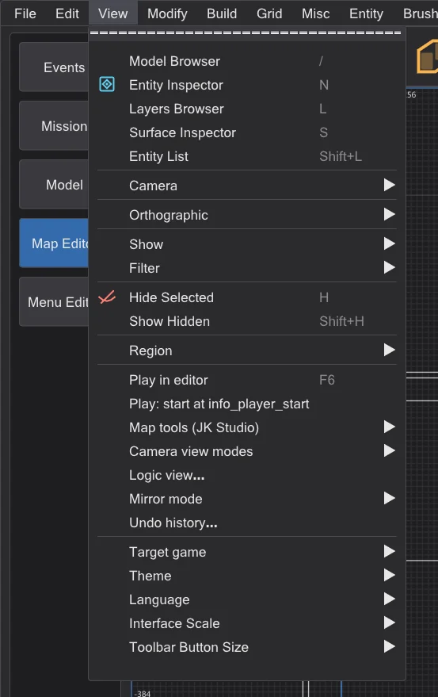
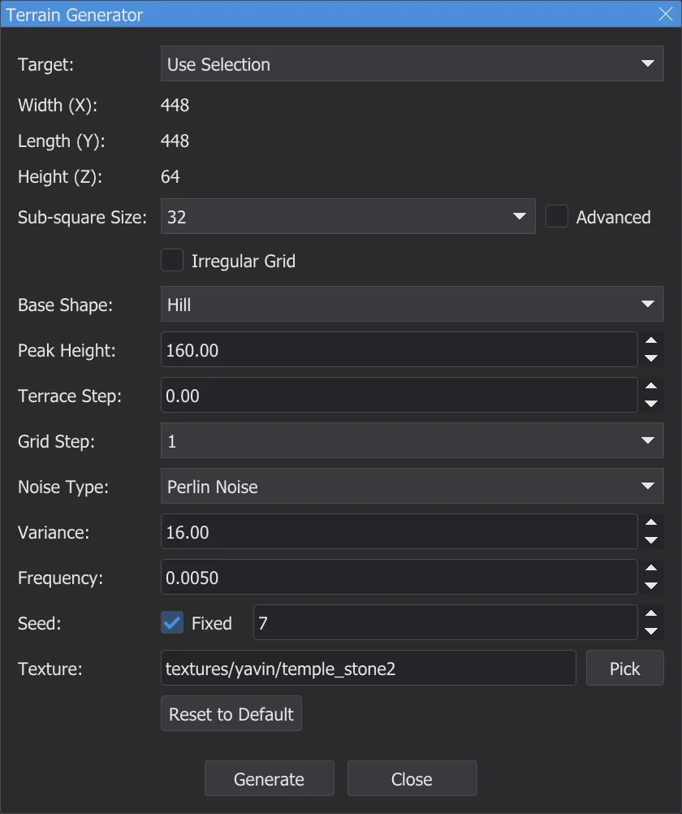
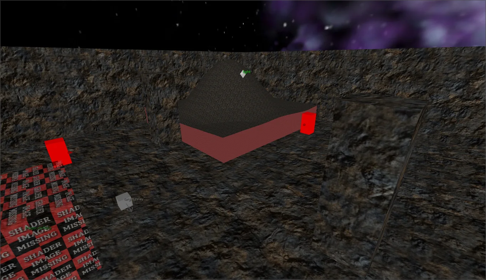
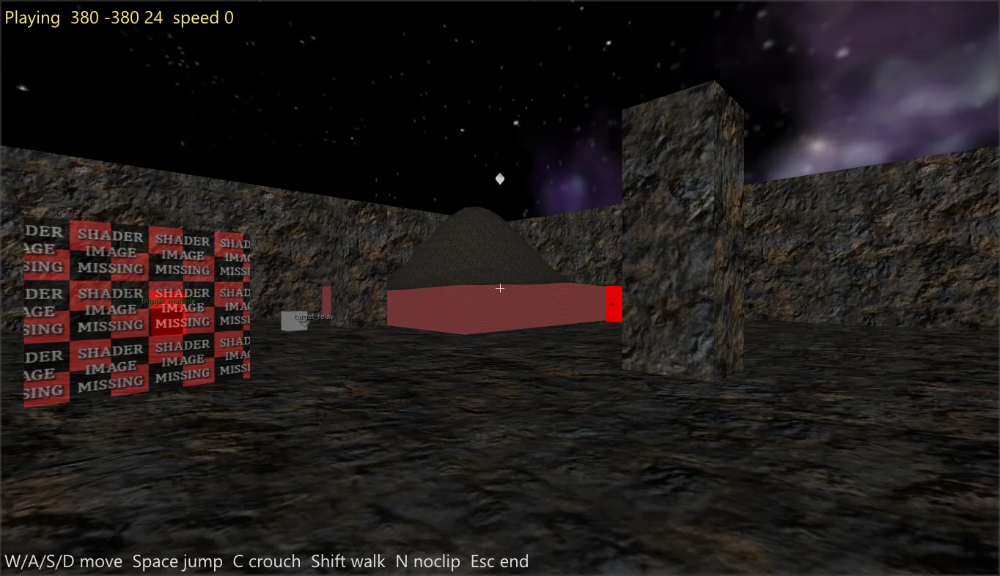
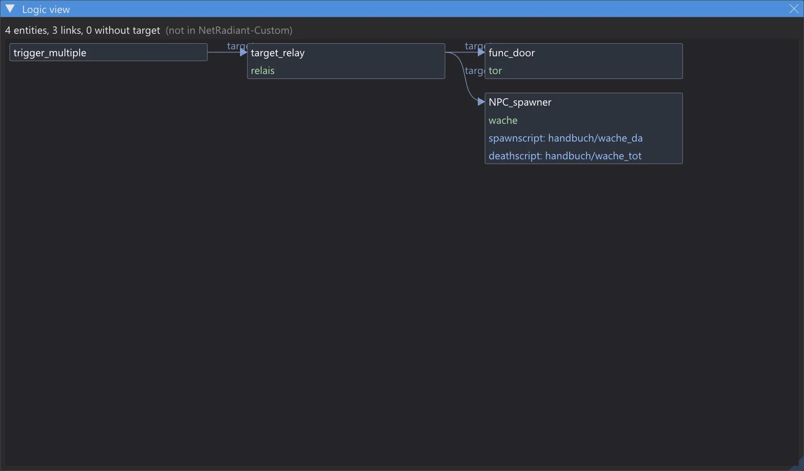
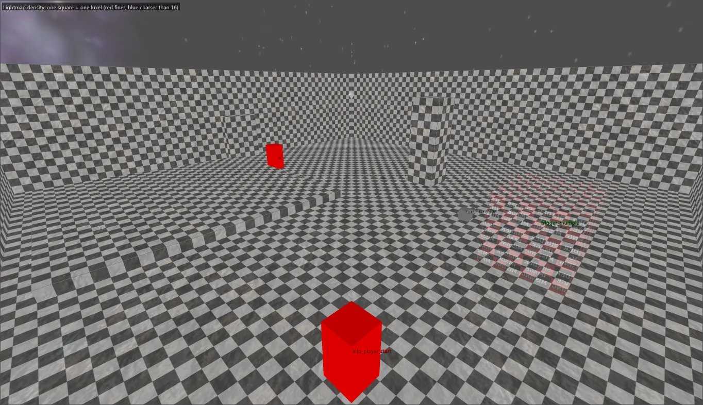
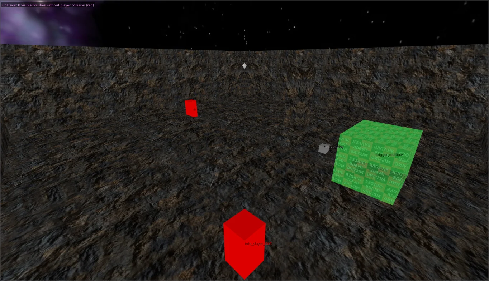
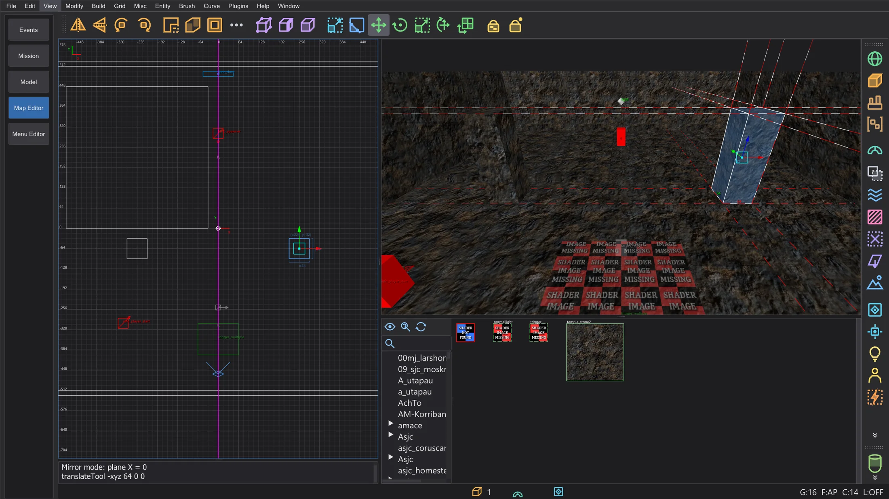
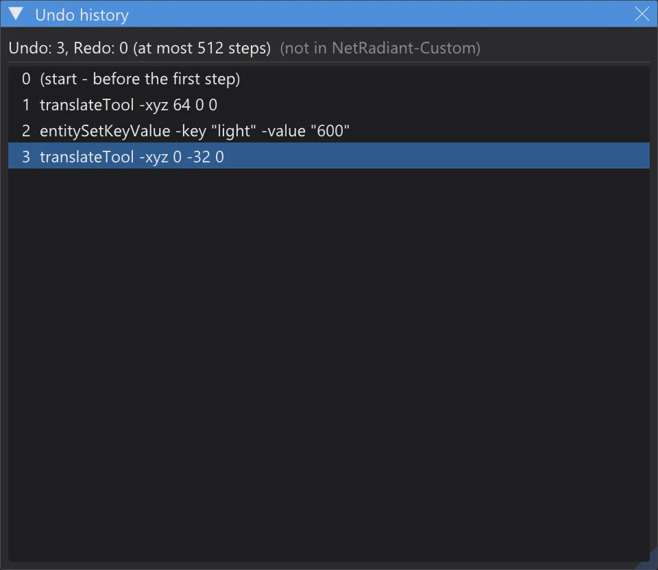

Editor de mapas: terreno, jugar, lógica, espejo y más
Genera terreno, recorre el mapa sin compilar, mira los enlaces entre entidades, comprueba la densidad de lightmap y la colisión, edita mapas simétricos con el modo espejo y salta por el historial de deshacer.
Todo lo de esta página salvo el Terrain Generator no está en NetRadiant-Custom: cada función tiene su propia entrada de menú con esa indicación, y con todas desactivadas el editor se comporta como NetRadiant-Custom. Las entradas nuevas están al final de View, encima de los ajustes del programa.

Imagen aún en inglésTerrain Generator#
Plugins > TerrainGenerator > Generate Terrain es el plugin del código fuente actual de NetRadiant-Custom (master, posterior a la versión 20260114), portado línea a línea: las mismas alturas, triángulos y texturas que el original con los mismos valores. El diálogo se queda abierto mientras trabajas en las vistas.


Imagen aún en inglés

Imagen aún en inglés- Destino: Usar la selección toma el tamaño del brush seleccionado y lo sustituye; Tamaño manual construye el terreno alrededor del origen.
- Forma base: (colina, cráter, cresta, pendiente, volcán, valle, túnel ...), Tipo de ruido:, Variación:, Frecuencia:, terrazas y el paso de rejilla como en el original; Generar es un paso de deshacer.
- Añadido propio: Semilla: Fija inicia los números aleatorios con un valor fijo; los mismos valores vuelven a dar entonces el mismo terreno. Desactivado (por defecto), la secuencia aleatoria sigue como en NetRadiant-Custom.
Ventanas divididas libres#
Preferences > Interfaz > Disposición > Ventanas divididas libres (disposición Split): cada una de las cuatro ventanas recibe un menú pequeño en su esquina (cámara, XY, XZ o YZ, también dos ventanas con la misma vista). Ctrl+Tab cambia el tipo de la ventana 2D activa y las posiciones de los divisores se conservan. Desactivado (por defecto), las cuatro ventanas son fijas como en NetRadiant-Custom.
Jugar en el editor#

Imagen aún en inglés- Sin compilar: la colisión sale directamente de los brushes y patches con el contenido que les daría q3map2 (surfaceparms del juego, brushes de clip, nonsolid, agua ...). Caminar, saltar, las escaleras y las pendientes usan el port del código de movimiento del juego (Pmove), el mismo que la vista previa del programa: JKA y Movie Duels, o las reglas de Jedi Outcast.
- W/A/S/D mueven, Espacio salta, C o Ctrl agacha, Mayús camina, el ratón mira, N activa noclip, Esc termina y devuelve la cámara adonde estaba.
- Jugar: empezar en info_player_start: activado, el inicio es el primer info_player_start (su origin + 9 y su ángulo, como lo elige el juego); desactivado, el inicio es la cámara.
Vista lógica#

Imagen aún en inglés- Vista lógica dibuja cada enlace entre las entidades como un grafo de izquierda a derecha: target, target2 ... target5, NPC_target, los destinos de las puertas y cada clave *target* de las definiciones de entidades; las claves de script (spawnscript, usescript, deathscript ...) se listan en la caja de la entidad.
- Un clic en una caja selecciona la entidad y centra en ella las vistas 2D y la cámara; un doble clic en una línea de script abre el script ICARUS en el editor de scripts. La rueda del ratón amplía, el botón derecho o central mueve.
- Un target sin targetname coincidente aparece como caja roja: un enlace que en el juego no lleva a ninguna parte.
Modos de vista de la cámara#


Imagen aún en inglés

Imagen aún en inglés- Densidad de lightmap: un tablero de ajedrez del tamaño del luxel por cara, calculado como q3map2 (q3map_lightmapSampleSize, _samplesize y _lightmapscale de la entidad, -samplesize; ampliado hasta que la cara cabe en 128 luxels). Más fino que 16 rojizo, más basto azulado, las caras sin lightmap en gris.
- Colisión: los brushes según el contenido que les da q3map2: playerclip magenta, monsterclip naranja, botclip amarillo, shotclip cian, nodrop rojo oscuro, agua, slime, lava, niebla, triggers. Las paredes visibles que el jugador atraviesa (sin colisión para el jugador) brillan en rojo vivo.
- Visibilidad (PVS) y Carga de triángulos necesitan el .bsp compilado junto al mapa (con VIS): lo que el motor dibuja desde el cluster de la cámara en verde, o un mapa de calor de los triángulos dibujados desde cada sitio. Los números se muestran arriba a la izquierda de la cámara.
Modo espejo#

Imagen aún en inglés- Modo espejo: Desactivado, Plano de espejo X, Plano de espejo Y o Plano de espejo Z; el plano pasa por el origen o, con Plano por el centro de la selección (en la rejilla), por el centro de la selección en la rejilla. Se dibuja como una línea magenta en las vistas 2D.
- Cada cambio en la selección se escribe en su homólogo en el mismo paso de deshacer, en directo al arrastrar. Los brushes y patches cuentan uno a uno, las entidades de punto y los grupos como un todo; origin, angle y angles se reflejan, las texturas como con Flip (con Texture Lock según esté).
- Si la imagen especular exacta ya existe, pasa a ser el homólogo; si no, el primer cambio crea una copia reflejada. Eliminar quita los dos; deshacer devuelve los dos exactamente. Los objetos simétricos sobre el plano no reciben homólogo.
Historial de deshacer#

Imagen aún en inglésHistorial de deshacer lista todos los pasos de deshacer (el más antiguo primero) y debajo los pasos de rehacer en gris. Un clic salta al estado tras ese paso con tantos Undo o Redo como haga falta, cada uno con su línea en la consola, como con Ctrl+Z y Ctrl+Y. La lista llega tan atrás como la cola de deshacer (Preferences > Undo Queue Size, por defecto 512).
misc_model de todas las carpetas de modelos#
Recuperar misc_model a partir de la geometría (Conservar los datos del editor) busca ahora modelos en todas las carpetas de modelos del juego, no solo en las carpetas de los shaders del mapa. Un índice de modelos (por modelo y malla: número de vértices, conjunto de triángulos y shader) está en la carpeta de ajustes como karte_modellindex_<…>.txt. La primera vez (y para archivos .pk3 nuevos o cambiados) bhed_q3map2 carga una vez los modelos que faltan (cerca de medio minuto para una instalación grande); después solo se cargan los modelos cuyas mallas coinciden con una superficie de triángulos del .bsp, o cuyo shader usa el .bsp. La consola nombra el índice y los candidatos.
| Mapa | antes | ahora |
|---|---|---|
| t2_trip | 0 | 13 |
| yavin1 | 18 | 32 |
| hoth2 | 5 | 32 |
| kor1 | 52 | 52 |
| jeditemple_garden (fuente conocida) | 265 / 265 | 265 / 265 |
Pruebas de sombra en GPU (desactivadas)#
bhed_q3map2 tiene la opción de línea de comandos -bhedgpu para -light: la prueba "¿el rayo del luxel a la luz choca con algo?" se ejecuta en la tarjeta gráfica (Direct3D 11); la luz en sí se queda en la CPU. El resultado es idéntico byte a byte al de sin ella, comprobado en cinco mapas y con el ctest q3map2_gpu. En el ordenador medido (32 hilos, RTX 4070 Laptop) no fue más rápido (mp/duel1 2,3 s → 3,2 s, kejim_post 10,0 s → 11,3 s), así que no está en el menú Build y sigue desactivada.